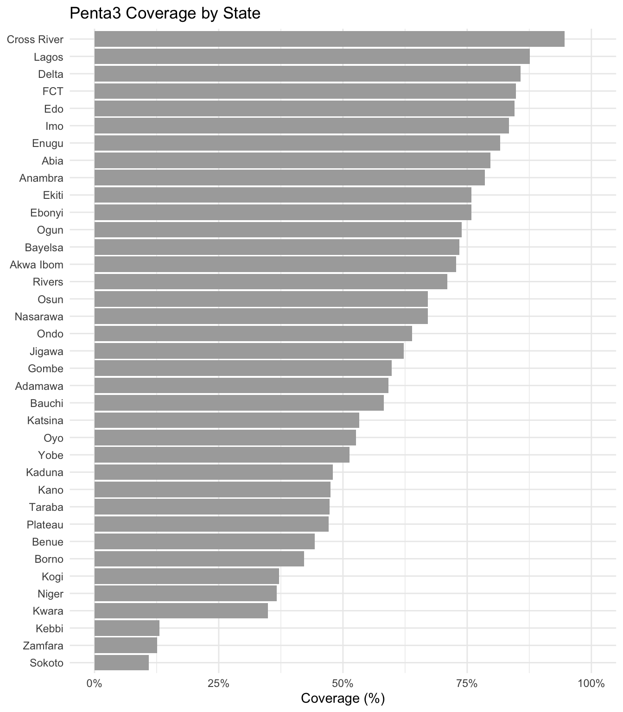
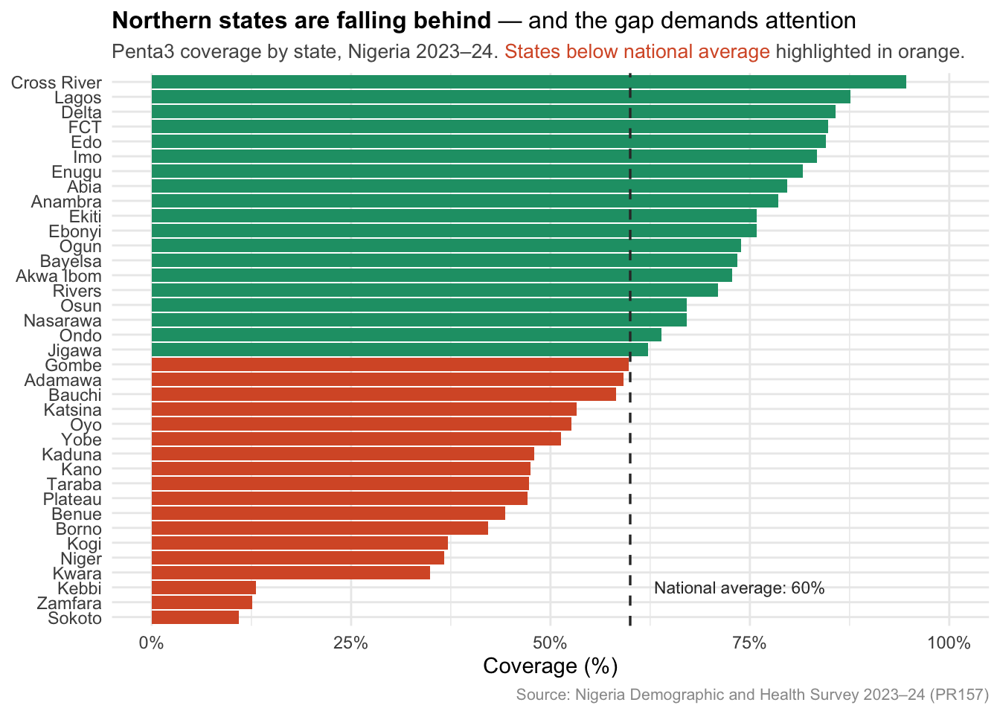
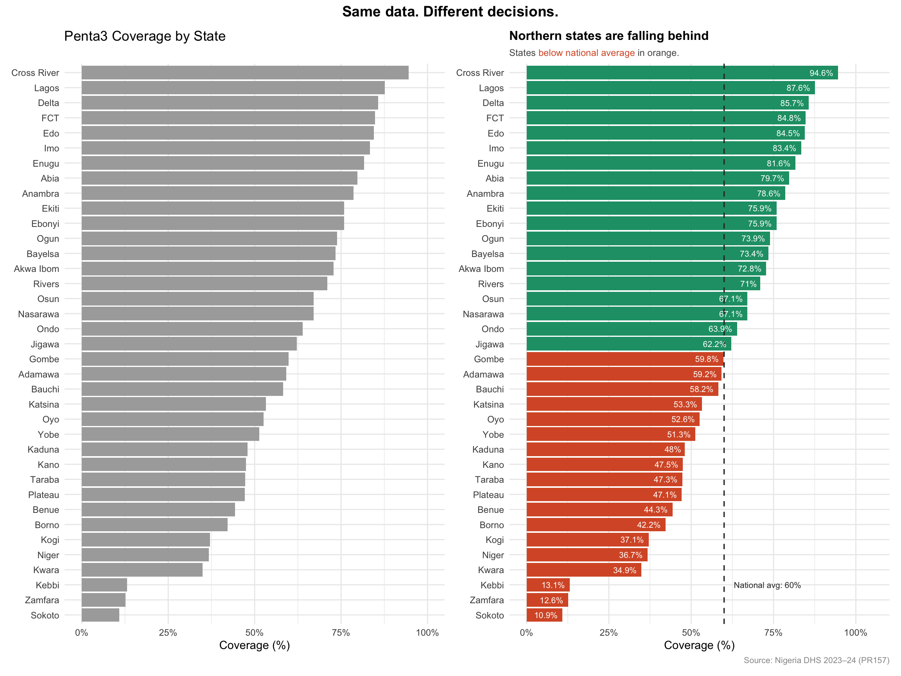

install.packages(c("ggplot2", "ggtext", "patchwork", "scales", "dplyr"))Tutorial #1: Why Most Public Health Charts Fail Policymakers
And how to fix yours in R
data visualisation
R
policy
beginners
The problem
You have spent days cleaning data, running analysis, and building a chart. You present it. The room nods. Nothing changes.
This is not a data problem. It is a communication problem — and it starts with your chart title.
This tutorial walks through exactly why most public health charts fail to drive decisions, and how to fix them using Nigerian immunisation data from the 2023–24 Demographic and Health Survey (DHS) and R.
What you will learn
By the end of this tutorial you will be able to:
- Explain why chart titles are the most powerful design decision in any policy visual
- Reframe descriptive chart labels into decision-driving arguments
- Build a clean, policy-ready bar chart in R using ggplot2
- Use ggtext to add formatted titles that direct attention
- Use patchwork to create before-and-after chart comparisons
Prerequisites
Before starting, make sure you have:
- R and RStudio installed on your computer
- A basic understanding of R — you can open a script and run code
- The following packages installed — if you do not have them, run this in your RStudio Console:
Data
We will use state-level Penta3 coverage estimates from the 2023–24 Nigeria Demographic and Health Survey (DHS) — specifically the percentage of children aged 12–23 months who received three doses of the pentavalent vaccine, by state.
The full report is publicly available at dhsprogram.com.
Rather than loading a file, we will enter the data directly into R as a data frame. This makes the tutorial fully self-contained — no downloads needed.
Step 1 — Load your packages
Every R session starts by loading the packages you need. Think of packages as toolboxes — each one gives you a specific set of tools.
library(ggplot2) # for building charts
library(ggtext) # for formatted text in chart titles
library(patchwork) # for combining multiple charts
library(scales) # for formatting axis labels as percentages
library(dplyr) # for organising and transforming dataEach library() call tells R: “I want to use the tools in this package today.”
Step 2 — Enter the data
We create our dataset using data.frame() — R’s way of building a table directly in your script. The coverage values come from Table 10 of the 2023–24 Nigeria DHS Key Indicators Report (PR157).
coverage <- data.frame(
state = c(
"Abia", "Adamawa", "Akwa Ibom", "Anambra", "Bauchi",
"Bayelsa", "Benue", "Borno", "Cross River", "Delta",
"Ebonyi", "Edo", "Ekiti", "Enugu", "FCT",
"Gombe", "Imo", "Jigawa", "Kaduna", "Kano",
"Katsina", "Kebbi", "Kogi", "Kwara", "Lagos",
"Nasarawa", "Niger", "Ogun", "Ondo", "Osun",
"Oyo", "Plateau", "Rivers", "Sokoto", "Taraba",
"Yobe", "Zamfara"
),
penta3_coverage = c(
79.7, 59.2, 72.8, 78.6, 58.2,
73.4, 44.3, 42.2, 94.6, 85.7,
75.9, 84.5, 75.9, 81.6, 84.8,
59.8, 83.4, 62.2, 48.0, 47.5,
53.3, 13.1, 37.1, 34.9, 87.6,
67.1, 36.7, 73.9, 63.9, 67.1,
52.6, 47.1, 71.0, 10.9, 47.3,
51.3, 12.6
)
)Step 3 — Inspect the data
Before building any chart, always look at your data first.
# View the first few rows
head(coverage) state penta3_coverage
1 Abia 79.7
2 Adamawa 59.2
3 Akwa Ibom 72.8
4 Anambra 78.6
5 Bauchi 58.2
6 Bayelsa 73.4# Quick summary of coverage values
summary(coverage$penta3_coverage) Min. 1st Qu. Median Mean 3rd Qu. Max.
10.90 47.30 62.20 59.99 75.90 94.60 summary() gives you the minimum, maximum, and average coverage values at a glance — useful for understanding the spread before you visualise it.
Step 4 — Build the “before” chart
This is the chart most analysts would produce — technically correct, but built for the analyst, not the decision maker.
chart_before <- ggplot(
data = coverage,
aes(
x = reorder(state, penta3_coverage),
y = penta3_coverage
)
) +
geom_col(fill = "#AAAAAA") +
coord_flip() +
scale_y_continuous(
labels = label_percent(scale = 1),
limits = c(0, 100)
) +
labs(
title = "Penta3 Coverage by State",
x = NULL,
y = "Coverage (%)"
) +
theme_minimal(base_size = 11)
chart_before
Notice the title: “Penta3 Coverage by State” It tells you what the chart is. It does not tell you what to do about it.
Step 5 — Find the argument in your data
Before building a better chart, we need to identify the decision hiding in the data.
# Calculate the national average
national_avg <- mean(coverage$penta3_coverage)
national_avg[1] 59.99459# States below the national average
coverage %>%
filter(penta3_coverage < national_avg) %>%
arrange(penta3_coverage) state penta3_coverage
1 Sokoto 10.9
2 Zamfara 12.6
3 Kebbi 13.1
4 Kwara 34.9
5 Niger 36.7
6 Kogi 37.1
7 Borno 42.2
8 Benue 44.3
9 Plateau 47.1
10 Taraba 47.3
11 Kano 47.5
12 Kaduna 48.0
13 Yobe 51.3
14 Oyo 52.6
15 Katsina 53.3
16 Bauchi 58.2
17 Adamawa 59.2
18 Gombe 59.8filter() keeps only rows where the condition is true. arrange() sorts them from lowest to highest so we can see the worst performers immediately.
This is your argument: a cluster of states — concentrated in the north — are significantly below the national average, and the gap is substantial.
Step 6 — Build the “after” chart
# Flag each state as above or below the national average
coverage <- coverage %>%
mutate(below_avg = penta3_coverage < national_avg)
chart_after <- ggplot(
data = coverage,
aes(
x = reorder(state, penta3_coverage),
y = penta3_coverage,
fill = below_avg
)
) +
geom_col() +
geom_hline(
yintercept = national_avg,
linetype = "dashed",
colour = "#333333",
linewidth = 0.6
) +
geom_text(
aes(label = paste0(penta3_coverage, "%")),
hjust = 1.2,
size = 2.8,
colour = "white"
) +
coord_flip() +
scale_fill_manual(
values = c("TRUE" = "#D85A30", "FALSE" = "#1D9E75"),
guide = "none"
) +
scale_y_continuous(
labels = label_percent(scale = 1),
limits = c(0, 105)
) +
annotate(
geom = "text",
x = 3,
y = national_avg + 3,
label = paste0("National avg: ", round(national_avg, 1), "%"),
hjust = 0,
size = 2.8,
colour = "#333333"
) +
labs(
title = "**Half of Nigeria's states are below the national Penta3 average**",
subtitle = "States <span style='color:#D85A30'>below national average</span> in orange.",
x = NULL,
y = "Coverage (%)",
caption = "Source: Nigeria DHS 2023–24"
) +
theme_minimal(base_size = 11) +
theme(
plot.title = element_markdown(size = 12, lineheight = 1.3),
plot.subtitle = element_markdown(size = 9, colour = "#555555"),
plot.caption = element_text(size = 8, colour = "#999999")
)
chart_after
Two things make this chart work differently from the first: element_markdown() lets us bold the title and colour the subtitle text, and the colour split immediately signals which states need attention.
Step 7 — Compare before and after
chart_before + chart_after +
plot_annotation(
title = "Same data. Different decisions.",
theme = theme(
plot.title = element_text(size = 14, face = "bold", hjust = 0.5)
)
) +
plot_layout(widths = c(1, 1))
patchwork makes combining charts as simple as using +. plot_annotation() adds an overarching title across both panels.
What just changed
| Element | Before | After |
|---|---|---|
| Title | Describes the chart | Makes an argument |
| Colour | Uniform grey | Encodes meaning |
| Reference line | None | National average anchor |
| Annotation | None | Contextual label |
| Subtitle | None | Directs the reader’s eye |
None of these changes require more analysis. They require a different question before you build the chart: what do I need my reader to do with this?
Your turn
Take a chart you have made recently. Look at the title. Ask yourself:
- Does this title describe the chart, or does it make an argument?
- What is the one thing I need my reader to decide after seeing this?
- Can I rewrite the title to answer that question directly?
Further resources
Next tutorial
Tutorial #2: Structuring a data story for policy audiences — how to sequence your findings so policymakers reach the right conclusion before you say a word.